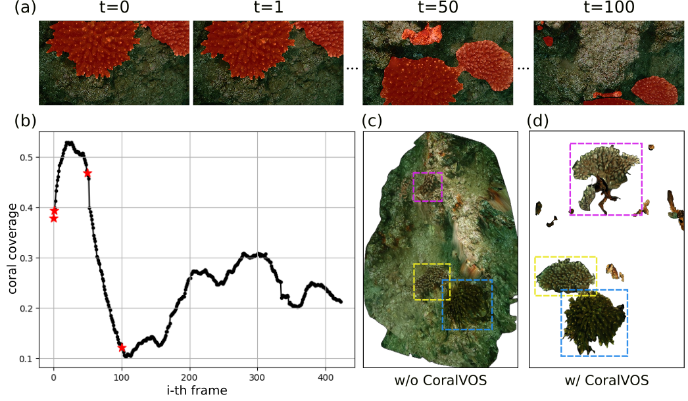
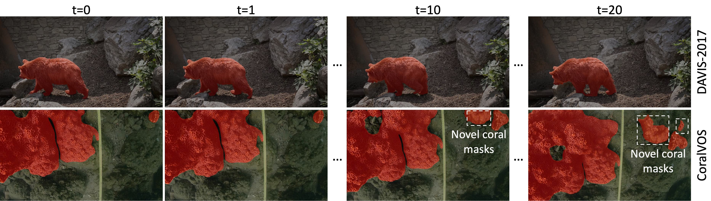
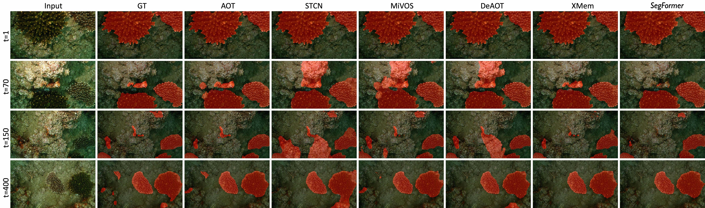
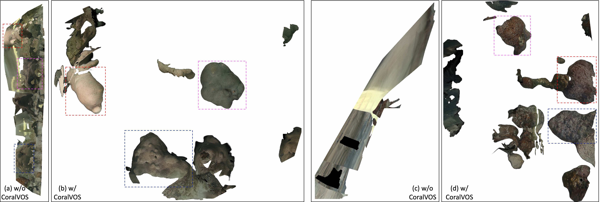

Fig.1: Example images with mask annotations from our CoralVOS dataset. The CoralVOS dataset could support segmenting different types of corals.
Abstract
Coral reefs formulate the most valuable and productive marine ecosystems, providing habitat for many marine species. Coral reef surveying and analysis are currently confined to coral experts who invest substantial effort in generating comprehensive and dependable reports (e.g., coral coverage, population, spatial distribution, etc), from the collected survey data. However, performing dense coral analysis based on manual efforts is significantly time-consuming, the existing coral analysis algorithms compromise and opt for performing down-sampling and only conducting sparse point-based coral analysis within selected frames. However, such down-sampling will inevitable introduce the estimation bias or even lead to wrong results. To address this issue, we propose to perform dense coral video segmentation, with no down-sampling involved. Through video object segmentation, we could generate more reliable and in-depth coral analysis than the existing coral reef analysis algorithms. To boost such dense coral analysis, we propose a large-scale coral video segmentation dataset: CoralVOS as demonstrated in Fig. 1. To the best of our knowledge, our CoralVOS is the first dataset and benchmark supporting dense coral video segmentation. We perform experiments on our CoralVOS dataset, including 6 recent state-of-the-art video object segmentation (VOS) algorithms. We fine-tuned these VOS algorithms on our CoralVOS dataset and achieved observable performance improvement. The results show that there is still great potential for further promoting the segmentation accuracy. The dataset and trained models will be released with the acceptance of this work to foster the coral reef research community.
Video
Application of CoralVOS

Dense coral video segmentation could support more reliable and in-depth coral analysis in a), yielding the coral coverage, population, and spatial distribution in b). It also leads to better 3D coral reconstruction in d) compared with the setting without dense coral video segmentation in c).
Problem formulation and difference with existing VOS

A direct comparison between the video sequence from DAVIS-2017 dataset and our CoralVOS dataset.
Qualitative Results

The qualitative comparison between different VOS algorithms. SegFormer is tested by frame-by-frame segmentation.
3D coral reconstruction

The reconstructed 3D coral map under different settings. We observe that we could heavily promote 3D coral reconstruction performance and alleviate geometry distortions based on dense coral video segmentation.
Citation
@article{zhengcoralvos,
title={CoralVOS: Dataset and Benchmark for Coral Video Segmentation},
author={Zheng, Ziqiang and Xie, Yaofeng and Liang, Haixin and Yu, Zhibin and Yeung, Sai-Kit},
journal={arXiv preprint arXiv:2310.01946},
year={2023}
}